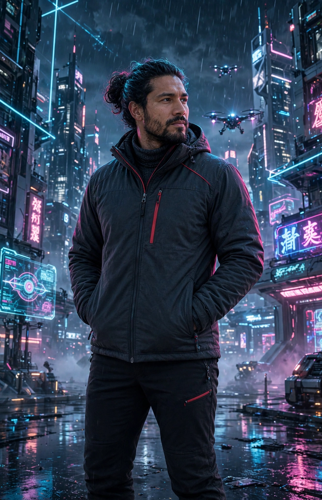

// STATUS: en línea ●
> hola_mundo ▮
FRANKJOUG
Filántropo · Ingeniero de seguridad · Fotógrafo · Creador de contenido
Seguridad de día, fotografía y contenido con estética cyberpunk. Me mueve aprender, crear y devolver algo a la comunidad. Bienvenido a mi rincón en la red: lo que construyo, lo que aprendo y en lo que creo.
$ ./galeria
Mis versiones: cyberpunk, samurái, ninja, Ryu y karategi negro. Usa las flechas o los puntos para cambiar de foto.
Cyberpunk
$ whoami
➜ ./identidad --verbose
nombre: Frankjoug
roles: [filántropo, ingeniero de seguridad, fotógrafo, creador de contenido]
stack: Seguridad · Fotografía · Contenido
modo: CYBERPUNK [ cian · magenta · morado sobre negro ]
misión: que el conocimiento y la ayuda lleguen más lejos ▮
$ ls ./areas
01 // SEGURIDAD
Ingeniería de seguridad y hacking ético. Tecnología aplicada para entender sistemas y protegerlos.
02 // FOTOGRAFÍA
Retrato, calle y paisaje, con ojo editorial y encuadre preciso.
03 // CONTENIDO
Creación de contenido con producción cuidada y estética moderna.
04 // FILANTROPÍA
Proyectos con impacto social, sin perder la estética ni el oficio.
$ cat ./metricas
Estas son mis métricas de GitHub, también visibles en la página principal de mi README:
$ ./evolucion
🦖 Juego: Evolución Dino
Como el dinosaurio del navegador cuando se va el internet: salta los obstáculos con Espacio, tocando la pantalla o con el botón Saltar. Mientras más puntos, más evolucionas.
Etapa: 👶 Bebé · Puntuación: 0 · Pulsa Jugar para empezar
Curiosidad] --> B[🧒 Niño
Aprender jugando] B --> C[🧑 Adolescente
Preguntar y probar] C --> D[🧑💻 Joven
Estudiar y crear] D --> E[👨 Hombre
Seguridad, foto y comunidad] E --> F[🌱 Seguir creciendo
Filantropía y oficio]
$ ./freud
EL ELLO
La parte de la mente que está destinada a satisfacer los impulsos, es la parte más primitiva y se sitúa en el inconsciente de nuestra mente.
PRESENTADO POR:
KELLY FERNANDA
RENGIFO LOZANO
EL INCONSCIENTE
Es el lugar donde se ubican los pensamientos reprimidos o negativos (una inaccesible para nuestra parte consciente). Sería la base del iceberg / la parte que no se ve.
EL YO
Es la parte que nos ayuda a enfrentar a la realidad y la que se erige como mediador entre el Ello y el SuperYo. Se sitúa en el consciente, inconsciente y preconsciente.
FREUD
PSICOANÁLISIS
Fue uno de los psicoanalistas más brillantes y gracias a su trabajo, en la actualidad, tenemos un gran conocimiento sobre el inconsciente, la personalidad y la conducta del ser humano, la psique/mente humana, las afecciones psíquicas, la interpretación de los sueños, la cultura o la sexualidad.
EL PRECONSCIENTE
Lugar donde están los recuerdos a los que podemos acceder si hacemos un esfuerzo (aquello que somos capaces de recordar y traer de nuevo a nuestra consciencia). Sería el cuerpo del iceberg que está sumergido / o semivisible.
SUPER YO
Es la parte en la que desarrolla todo aquello que el individuo recoge de su cultura, la norma moral interiorizada. La que nos dice lo que es moral o ético y lo que nos prohíbe. Se ubica en el consciente, inconsciente y preconsciente.
REFERENCIA
Martínez, R. R. (2022, 22 abril). Freud ideas principales. unprofesor.com
https://www.unprofesor.com/ciencias-sociales/freud-ideas-principales-5337.html
EL CONSCIENTE
Es lo que pensamos en cada momento y la parte consciente (parte a la que podemos acceder sin problema). Sería la punta más alta del iceberg / lo visible.
$ play ./musica
$ ls ./proyectos
$ conectar --todas
// encuéntrame en la red — elige tu canal